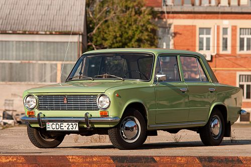

jiguli

The VAZ-2101 "Zhiguli", commonly nicknamed "Kopeyka" (for the smallest Soviet coin, 1/100 of the Russian ruble), is a compact 4-door sedan or wagon, called small class, passenger car, model 1 in Soviet classification, and produced by the Soviet manufacturer AvtoVAZ, introduced in 1970 as the company's first product.
The car is a licence-built version of the Fiat 124, that was heavily modified and tailored for the rough climate and road conditions across the Soviet Union and much of the Eastern Bloc countries. Subsequently, it was widely, and successfully exported to the West under the Lada brand, for over two decades. The station wagon version (correspondingly based on the Fiat 124 Familiare) was known as the VAZ-2102.